Evidence
Of
Learning
TIME DOCUMENTED & WORK RECORDED
This section contains my journals, signed time log, and personal lab notebook. Every day I came in is documented in my journals, where I recorded what I did. My lab notebook contains the raw data, calculations, and notes from my experiments.
Confidentiality Notice
Due to confidentiality policies at Jain Chem Ltd., I was unable to photograph certain experiments, instruments, or data during my internship. I still acquired a few pictures/data sheets, but I could not take pictures most of the time. Most work contained proprietary company information that I was not permitted to share. My journals and lab notebook serve as my primary documentation of everything I completed during my time there, and there are images under the 'Contribution' section and in other areas.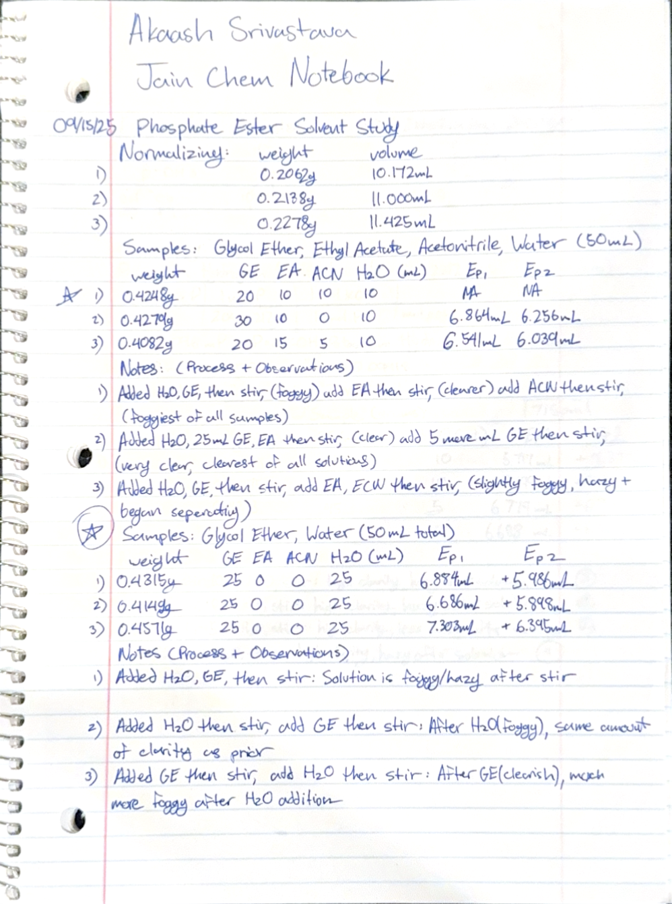
06.1
September Journals
06.2
October Journals
06.3
November Journals
06.4
December / January Journals
06.5
Laboratory Notebook Pages
Click on each page to expand
Page 01
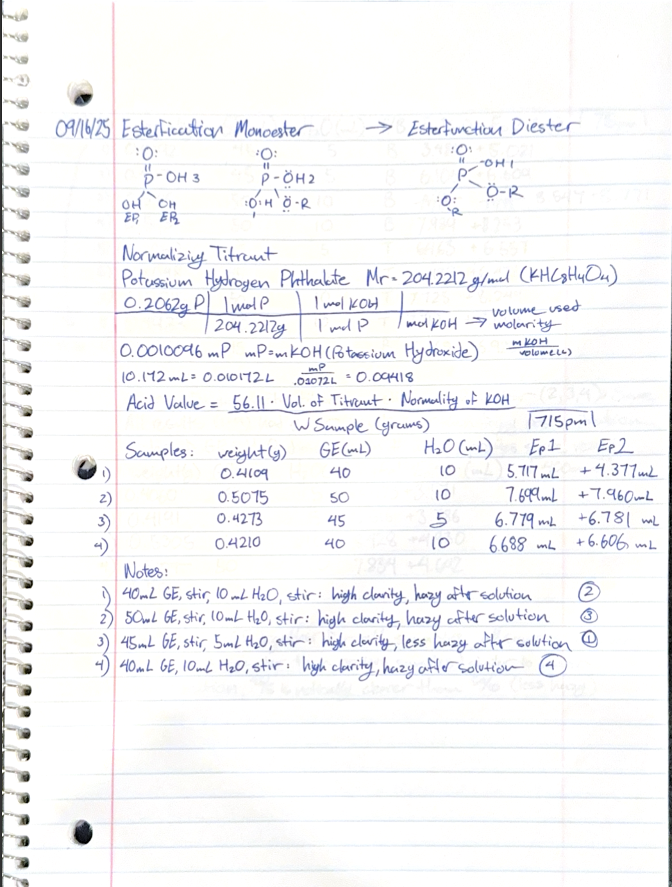
Page 02
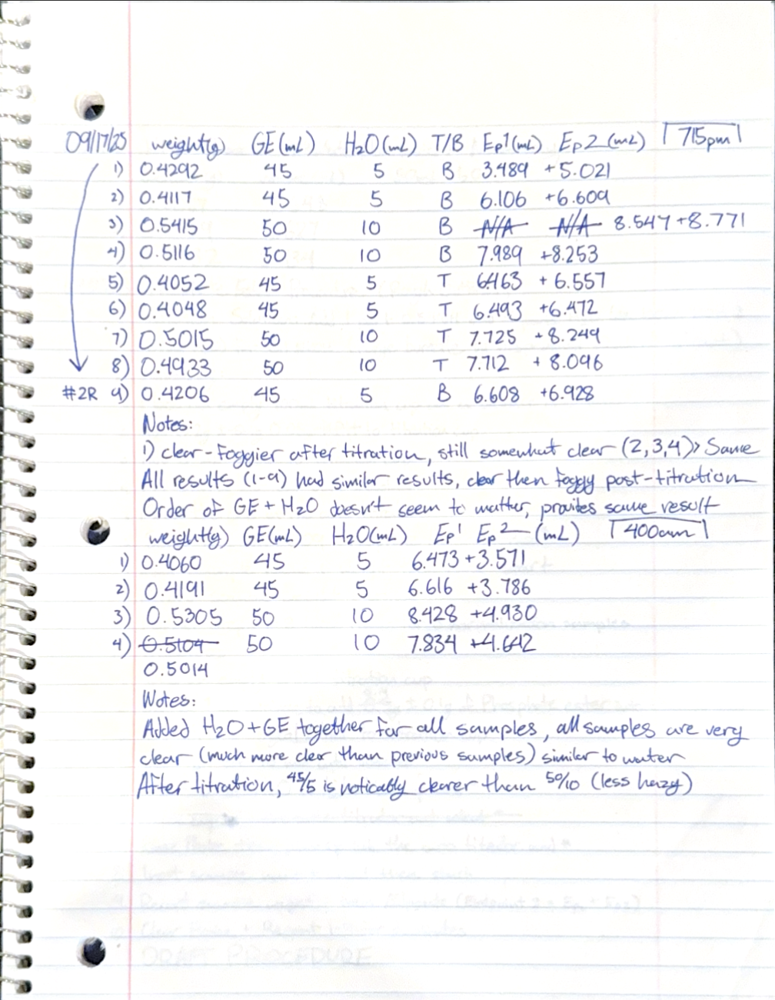
Page 03
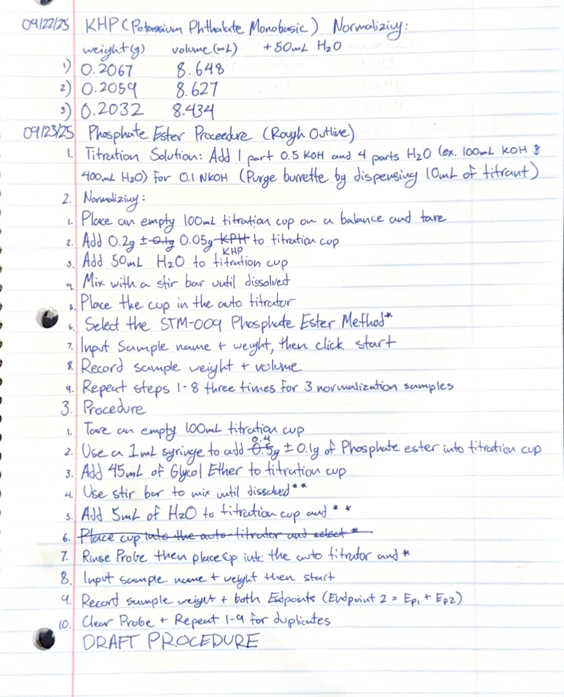
Page 04
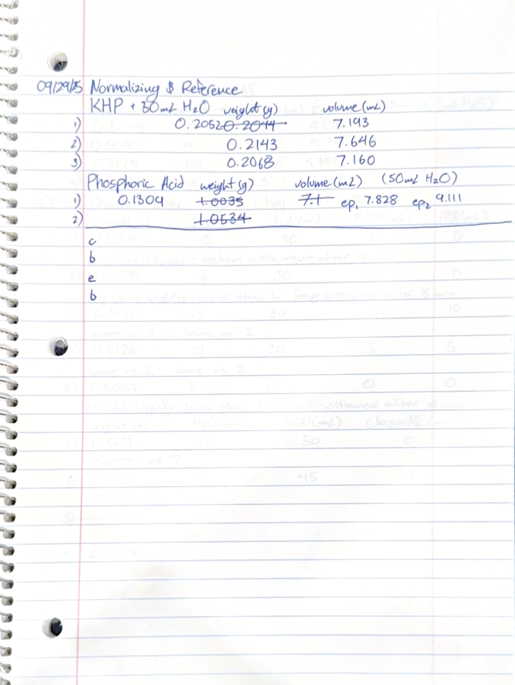
Page 05
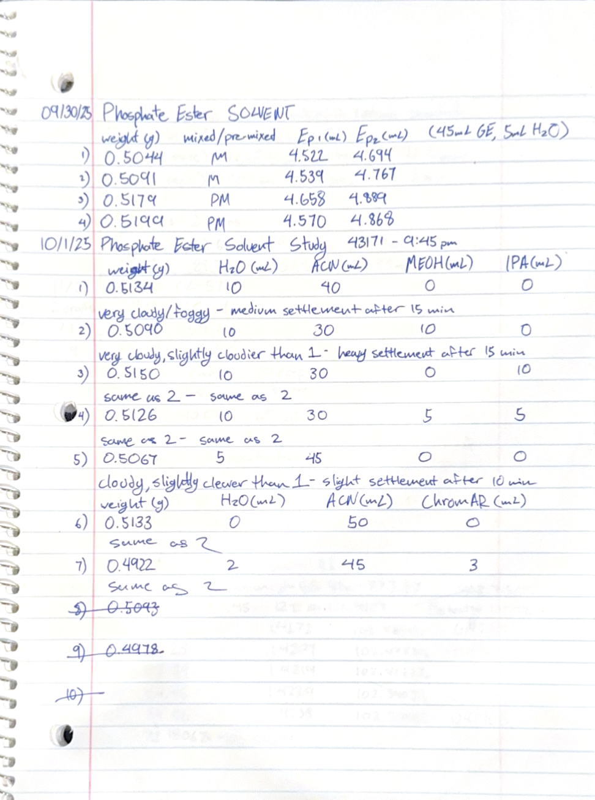
Page 06
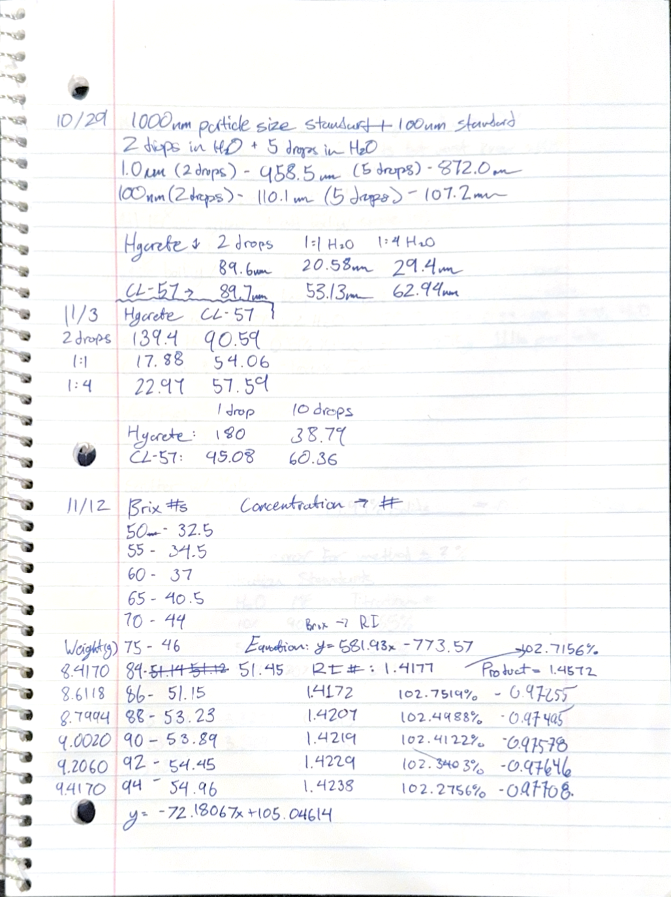
Page 07
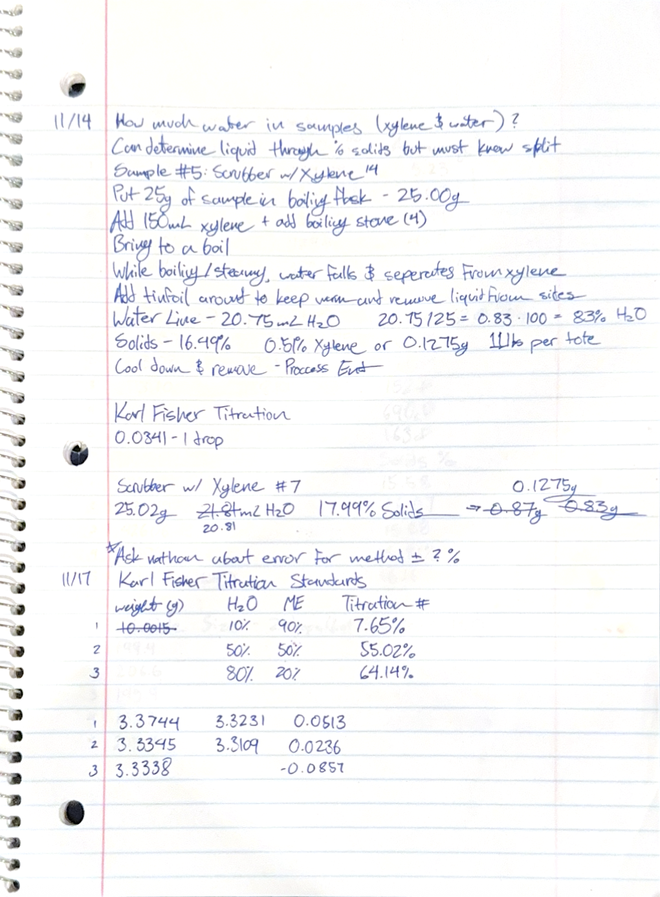
Page 08
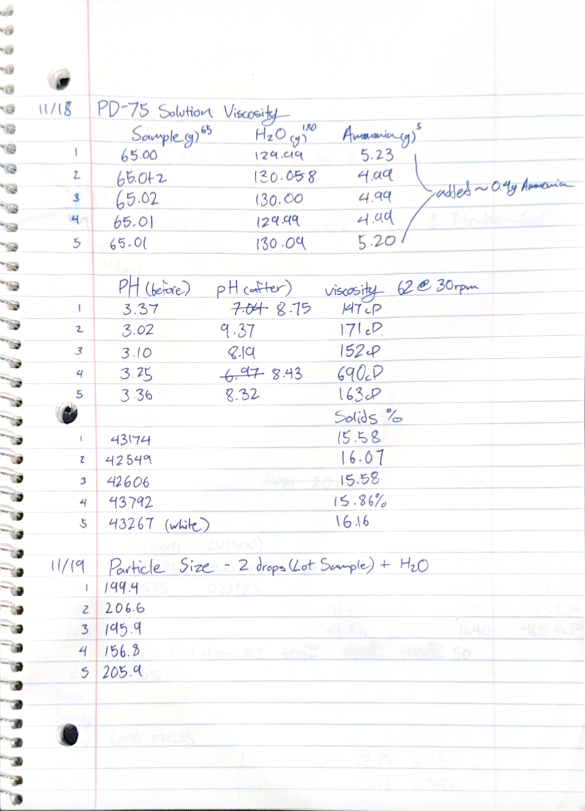
Page 09
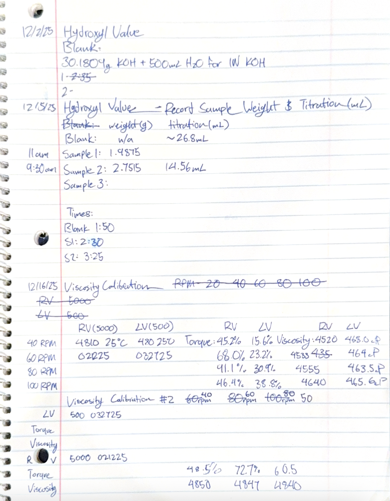
Page 10
06.6
Signed Time Logs
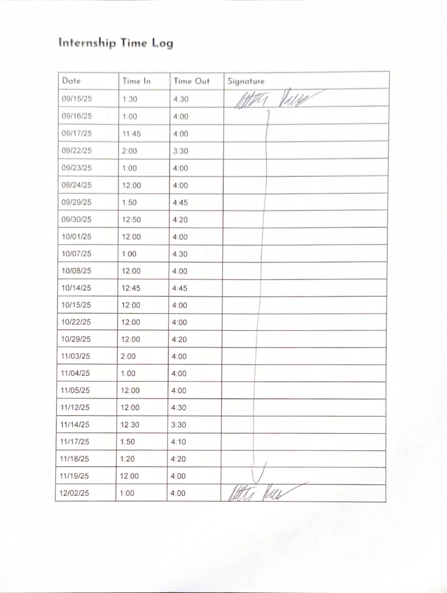
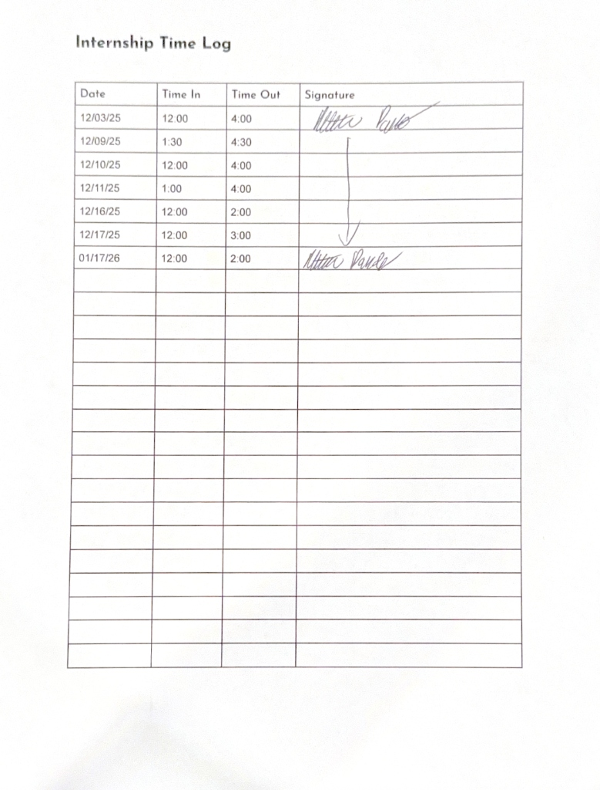